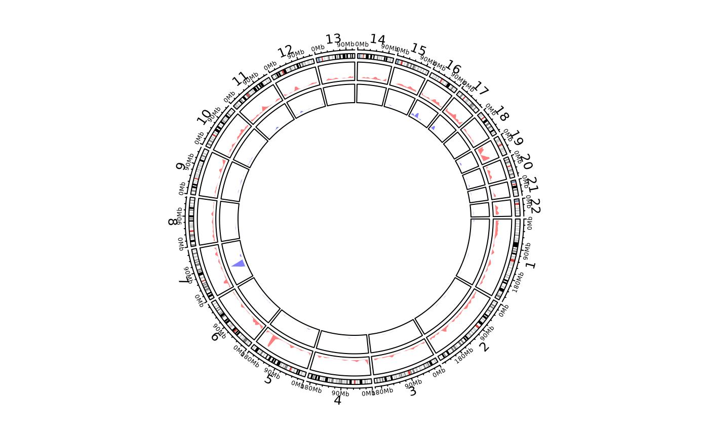

Object ccGenomicTrack will call the function circlize::circos.genomicDensity while drawing.
Arguments
- data
A bed-file-like data frame or a list of data frames. If the input is a list of data frames. there will be multiple density plot in one same track.
- ylim.force
Whether to force upper bound of
ylimto be 1. Ignored ifcount_byis set tonumber.- window.size
Pass to
genomicDensity.- overlap
Pass to
genomicDensity.- count_by
Pass to
genomicDensity.- col
Colors. It should be length of one. If
datais a list of data frames, the length ofcolcan also be the length of the list. If multiple sets of genomic regions are visualized in one single track, you should set the colors with transparency to distinguish them.- lwd
Width of lines, the same setting as
colargument.- lty
Style of lines, the same setting as
colargument.- type
Type of lines, see
circos.lines.- area
See
circos.lines.- area.baseline
Deprecated, use
baselineinstead.- baseline
See
circos.lines.- border
See
circos.lines.- ...
Pass to
circos.trackPlotRegion.
Value
Object ccGenomicTrack
Examples
library(circlizePlus)
load(system.file(package = "circlize", "extdata", "DMR.RData"))
cc = ccPlot(initMode="initializeWithIdeogram", chromosome.index = paste0("chr", 1:22))
t2 = ccGenomicDensity(DMR_hyper, col = c("#FF000080"), track.height = 0.1)
t3 = ccGenomicDensity(DMR_hypo, col = c("#0000FF80"), track.height = 0.1)
cc + t2 + t3

circos.clear()